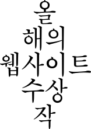
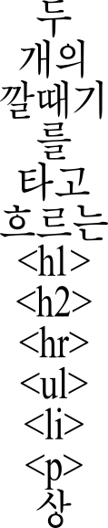
,상">
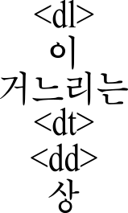
이 거느리는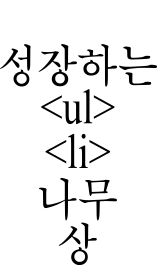
,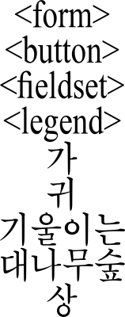
,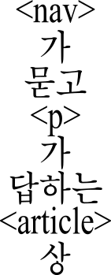
가 묻고가 답하는
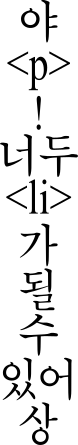
! 너두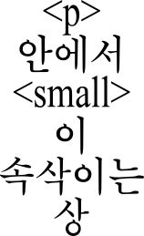
안에서 이 속삭이는 상">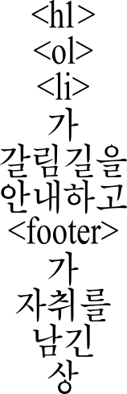
,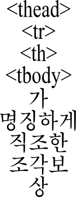
,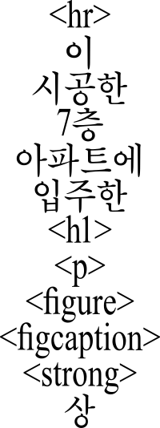
이 시공한 7층 아파트에 입주한,
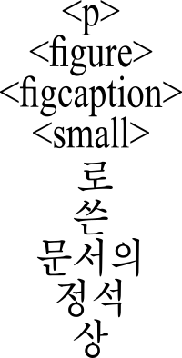
,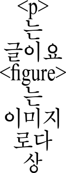
는 글이요핑크 노스탤지어
〈핑크 노스탤지어〉는 2000년대 초반의 대중문화 키워드를 정리한 웹사이트입니다. 키워드와 설명글, 각주가 서로를 설명하는 구조를 가지고 있습니다. 세 개의 단락 사이에 놓인 깔때기를 타고 걸러지는 텍스트를 h1, h2, hr, ul, li, p 요소를 사용해 명확한 위계를 형성한 점을 고려해 이 상을 수여합니다.
Sandbox
〈Sandbox〉는 모래알 안에 자신의 단상이나 다양한 출처의 문장들이 숨어있는 웹사이트입니다. 무작위로 나열한 span요소가 모래사장에 가지런히 정렬되어 있는 풍경입니다. 페이지 하단의 파라솔 아이콘을 눌러 접근할 수 있는 개발자 노트 두 권에서 자신만의 용어를 정리한 목록을 dl 요소로, 용어를 dt 요소로, 이를 설명하는 글을 dd 요소에 알맞게 담은 점에 주목해 이 상을 수여합니다.
숲사람 모음집
〈숲사람 모음집〉은 자신의 활동을 담는 목록이 있는 웹사이트입니다. 여러 개의 ul 요소 안에 li 요소를 올바르게 넣어 나무의 가지와 뿌리처럼 위, 아래로 자라날 목록의 성장 가능성을 보여줌에 이 상을 수여합니다.
화날 때 쓰는 편지
janeenaj.github.io/angry.letter.service
〈화날 때 쓰는 편지(Angry Letter Service)〉는 방문자가 분노를 다스릴 수 있도록 도와주는 웹사이트입니다. 만든 이 자신이 분노의 대상이 되었던 경험과 분노 조절의 노하우를 활용해 만든 공익적인 목적의 서비스입니다. form, fieldset, legend 요소에 익명의 편지를 적고 button를 눌러 보낼 수 있도록 요소들을 명확하게 사용한 점에 주목해 이 상을 드립니다.
제주사용설명서(2021)
myeong.neocities.org/allaboutjeju_1
〈제주사용설명서(2021)〉는 제주에 대한 정보를 담고 있는 웹사이트입니다. 제주에서 나고 자란 이가 제주에 관해 반복적으로 질문하는 사람들에 대비한 답변을 모아두었습니다. 교통수단과 날씨, 지역 등에 대해 성실히 답하는 가운데, 질문들로 인한 피로와 질문자에 대한 애정이 느껴져 애환을 자아냅니다. nav 요소가 키워드를 제시하면 p 요소가 답해주도록 구성한 article 요소를 통해 미래의 질문자들에게 더 나은 정보 제공 방식을 고민한 점을 주목해 이 상을 드립니다.
ticcle
〈ticcle〉은 작업자들의 일상과 작업을 볼 수 있는 웹진입니다. 비영리적으로 보이는 광고와 화려한 축전들 사이에서도 작업자들의 콘텐츠가 명확한 목록의 구조를 가지고 있습니다. 길고 짧은 문단을 담은 p 요소들을 나열한 목록 li 요소를 구성해 문단도 모이면 목록이 될 수 있다는 가능성을 보여준 점에 주목해 이 상을 드립니다.
더듬이 탐사 일지
〈더듬이 탐사 일지〉는 ‘활력 있는 더듬이 모임’ 구성원들이 청계천, 을지로, 세운상가 일대를 돌아다닌 기록을 담은 웹사이트입니다. 웹사이트를 방문하면 모임원들의 탐사 내용을 살펴볼 수 있습니다. 기록을 세세히 살펴보면, 글의 문단 p 요소 안에 small 요소로 참고 사항이나 세부 내용들을 꼼꼼히 말해주는 점에 주목해 이 상을 드립니다.
망치와 벽돌공
〈망치와 벽돌공〉은 의미심장한 객관식 문제를 담고 있는 웹사이트입니다. 방문자는 거꾸로 흐르는 시계가 걸려있는 아늑한 공간에서 낯선 문제를 발견하게 됩니다. 이 웹사이트는 h1 요소에 적혀진 질문을 따라 ol, li 요소로 작성된 이정표를 거쳐 답을 찾아 footer 요소로 작성자의 자취를 확인할 수 있는 점에 주목해 이 상을 드립니다.
ifeelsoaloneinmy.computer
〈ifeelsoaloneinmy.computer〉는 누군가의 꿈을 엿보는 듯한 수수께끼 같은 웹사이트입니다. 웹사이트를 방문하면, 6×6의 작은 조각보 같은 매트릭스를 볼 수 있습니다. 매트릭스를 만드는 칸은 다른 칸으로 이어집니다. 그중에서도 6×6 속의 한 부분을 thead, tr, th, tbody 요소를 이용해 한 땀 한 땀 조각보처럼 수놓은 점에 주목해 이 상을 드립니다.
이것은 책모임이 아니다
〈이것은 책모임이 아니다〉는 매주 저녁 시간에 모이는 한 모임을 소개하는 웹사이트입니다. 이 웹사이트는 모임의 구성원과 활동 등을 설명하는 여섯 가지 분류의 내용과 인스타그램 계정 링크로 구성되어 있습니다. hr 요소가 만드는 수평선을 통해 구분되는 각각의 내용에는 h1, p, figure, figcaption, strong 요소가 올바르게 쓰여 아늑한 7층 아파트를 연상시키기에 이 상을 수여합니다.
the use of PHYSICS
doheework.github.io/fakeLibrary_theuseofPHYSICS
〈the use of PHYSICS〉는 『물리학의 응용』이라는 책을 소개하는 웹사이트입니다. 이 웹사이트는 책 이미지와 책에 관한 여러 문단의 글로 이루어져 있습니다. 책 이미지에는 figure, figcaption 요소를 사용했고, 글의 문단에는 p 요소를 사용했으며, 주석으로는 small 요소를 사용한 점이 문서 작성의 정석을 보여주어 이 상을 수여합니다.
환대의 조각들 #000
〈환대의 조각들 #000〉은 열 아홉명의 참여자가 ‘인간, 기술, 환경’이라는 키워드를 바탕으로 모은 글, 이미지, 소리 등을 담은 웹사이트입니다. 참여자별로 다른 형태의 조각을 클릭하면 참여자에 대한 정보와 조각의 내용을 확인할 수 있습니다. 내용 중, 글은 p 요소로 이미지는 figure 요소를 사용한 점이 명확하기에 이 상을 수여합니다. 또한, 분산화된 방식으로 서로를 연결하는 디스트리붓시(distribusi)라는 방식을 사용해 웹사이트를 구축한 점과 img 요소의 속성 중 하나인 대체 텍스트를 입력한 점 역시 주목할만 합니다.